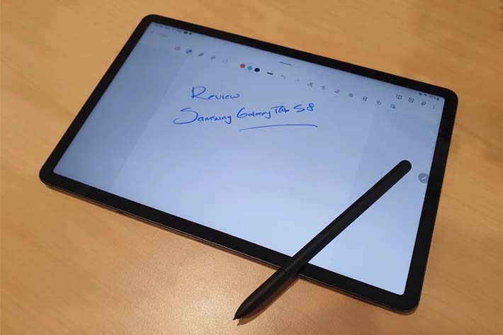

Review Samsung Galaxy Tab S8, Layar Besar Performa Ngebut
Pontianak, 6 Agustus 2022 - 17.48
oleh Irfanda Anugerah (VANZGADGET.COM)

Dengan popularitas tablet yang belum surut, Samsung kembali meluncurkan tablet terbarunya di 2022, Galaxy Tab S8 Series yang hadir dalam tiga model Galaxy Tab S8, Galaxy Tab S8+, dan Galaxy Tab S8 Ultra.
Seri ini hadir dengan chip 4nm yang diklaim sebagai yang tercepat saat ini, dengan keunggulan-keunggulan seperti layar AMOLED pada model tertingginya, rangka berbahan armor aluminium dengan durabilitas tinggi, baterai berkapasitas besar, serta kamera dengan spek yang mumpuni.
Pricebook mendapatkan kesempatan untuk mencoba langsung segala fitur yang ditawarkan oleh seri ini melalui perangkat Samsung Galaxy Tab S8 yang akan saya ulas dengan menyorot berbagai fitur dan keunggulannya sebagai perangkat yang mendukung produktivitas dan hiburan.
Perangkat Samsung yang saya gunakan pada review ini adalah Samsung Galaxy Tab S8 dengan varian warna Graphite. Secara umum, desian kotak kemasannya tidak jauh berbeda dengan produk-produk tablet Samsung yang rilis sebelumnya.
Kotaknya didominasi oleh warna putih dengan tulisan “Galaxy Tab” yang terpampang besar di atas foto perangkat. Lalu pada bagian bawahnya, terdapat tulisan Galaxy Tab S8 kecil berwarna hitam. Simpel dan minimalis khas Samsung.
Saat kotak dibuka, saya menemukan satu unit tablet Samsung Galaxy Tab S8 dan satu unit S Pen, serta kelengkapan aksesoris berupa kabel USB Type-C, buku panduan, dan kartu garansi. Tidak ada kepala charger (adaptor) pada paket pembeliannya.
Perangkat yang diulas ini adalah model dengan Wi-Fi, dan dibekali dengan slot microSD untuk menambah kapasitas memori internal bila dibutuhkan. Serta mengusung RAM 8 GB/128 GB.
Unit yang saya review mengusung layar LTPS TFT berukuran 11 inci dengan kualitas resolusi layar 2560 x 1600 piksel yang ketika digunakan di dalam dan luar ruangan, memiliki tampilan yang baik dengan tingkat kecerahan dan kontras warna yang pas.
Saya lebih banyak menggunakan tablet ini untuk melakukan aktivitas menonton film dan series, serta membaca buku dan komik berformat digital. Selama empat hari menggunakannya, saya merasa nyaman karena bobotnya yang tidak terlalu berat (503 gram).
Samsung Galaxy Tab S8 memiliki ukuran 165.3 x 253.8 x 6.3 mm yang untuk tangan lebar saya, tidak terasa membatasi. Tablet ini enak untuk digunakan secara handheld ketika saya berada pada posisi duduk, atau berbaring.
Pada hari pertama penggunaan Samsung Galaxy Tab S8, saya memaksimalkannya untuk aktivitas hiburan, dengan binged watch series dan film yang saya tonton dari berbagai media streaming mulai mulai dari Netflix, Disney+ Hotstar, iQiyi, dan banyak lainnya.
Tingkat kecerahan 600 nit yang berpadu dengan pefroma refresh rate 120Hz sangat terasa sekali. Transisi setiap adegan, terutama untuk film-film aksi dengan peralihan kamera yang cepat, terlihat sangat halus dan mulus. Kualitas video tertinggi pun terlihat sangat tajam dan jernih.
Sebagai tablet Galaxy Tab pertama Samsung yang mengusung prosesor Qualcomm Snapdragon 8 Gen 1 dengan teknologi proses 4nm, performa dan kecepatannya memang sangat saya rasakan sekali. Apalagi berdasarkan klaim Samsung, performa CPU-nya mengalami peningkatan 24 persen bila dibandingkan generasi Galaxy Tab sebelumnya.
Terlebih lagi, Samsung Galaxy Tab S8 juga dibekali quad speaker yang mengusung teknologi Dolby Atmos. Kualitas suara yang dihasilkan terdengar maksimal, terutama ketika digunakan untuk memutar video musik di YouTube.
Cara mengaktifkan fitur Dolby Atmos ini cukup mudah, hanya dengan membuka ‘Quick Panel’ dan sentuh opsi ‘Dolby Atmos’. Setelah itu, masuk ke pengaturan dan pilih ‘Sound’, lalu sentuh ‘User Mode’.
Di hari kedua, saya fokus melakukan berbagai kegiatan produktivitas seperti dengan penggunaan normal, termasuk browsing internet, menggunakan berbagai aplikasi media sosial, aplikasi olahraga, membaca e-book, bermain game, dan sebagainya.
Seperti di hari sebelumnya, saya tidak mendapatkan kendala apapun selama melakukan berbagai aktivitas tersebut. Performa tablet sangat baik dan lancar. Bahkan ketika digunakan untuk membuka aplikasi berat pun, semua bisa dilakukan dengan baik.
Hari ketiga menggunakan Samsung Galaxy Tab S8 saya memaksimalkan untuk mencoba kamera untuk membuktikan langsung apa saja yang menjadi keungulannya. Sebagai tablet, jujur saja, aktivitas memotret atau merekam video tidak senyaman ketika menggunakan smartphone.
Namun hal tersebut tidak berarti kualitas kameranya buruk, tidak sama sekali, karena hasil jepretan kamera Samsung Galaxy Tab S8 sudah lebih dari cukup untuk memenuhi kebutuhan foto dan merekam seluruh momen berharga dengan fitur-fitur andalannya.
Perangkat ini dibekali dengan kamera depan ultra-wide angle beresolusi 12 MP yang sangat cocok untuk melakukan video call, apalagi dengan layarnya yang besar, maka hasil pertemuannya juga akan lebih memuaskan ketimbang harus melakukannya di layar smartphone.
Namun ada sedikit kekurangan ketika saya menggunakannya untuk vlogging dengan memegangnya di tangan dan mencoba berjalan-jalan di sekitar. Ukurannnya yang besar tidak dapat dipungkiri jadi sedikit membatasi keleluasaan saya ketika merekam.
Untungnya, ada fitur Auto Framing yang memungkinkan kamera untuk selalu fokus pada wajah saya, dengan mengikuti setiap pergerakan yang saya lakukan, sehingga walau beberapa kali tangan kehilangan kestabilan, hasil rekaman videonya tetap baik dan tidak blur.
Pada sisi panel belakangnya, terdapat dual camera beresolusi 13 MP (AF) dan 6 MP (ultra-wide) yang secara umum cukup baik untuk mengambil gambar. Namun seperti saat menggunakannya untuk merekam video, butuh penyesuaian untuk memotret menggunakan tablet ini.
Contoh jepretan kamera Samsung Galaxy Tab S8:
Samsung Galaxy Tab S8 dilengkapi dengan S Pen yang dirancang untuk memberikan kemampuan menulis dan menggambar yang mereplika pengalaman menggunakan pena atau pensil yang sebenarnya, dengan sangat baik.
Ketika mencoba S Pen untuk menulis, saya merasakan tingkat respon yang cukup cepat. Selain itu, hasil goresannya juga terlihat alami, bahkan ketika sama memperbesarnya. Semua ini berkat latensi rendah 6,2ms.
Saya menikmati S Pen ini selayaknya menggunakan pena atau pensil konvensional. Bahkan ketika saya menggunakannya untuk menggambar, hasilnya juga memuaskan. Sensitivitas tekanannya sangat baik, sehingga respon ujung S Pen ketika menghasilkan goresan di layar, cukup cepat.
Untuk mengisi baterainya, saya cukup meletakkan S Pen di sisi magnet yang ada pada panel belakang Samsung Galaxy Tab S8. Ketika melakukan ini, maka S Pen juga akan secara otomatis terhubung dengan tablet via Bluetooth.
Hadirnya S Pen saya rasakan sangat memudahkan ketika harus mencatat dengan cepat, terutama bila sedang menggunakan video call dan saya harus menuliskan beberapa poin penting tanpa harus mencari pena dan buku catatan. Praktis dan cepat.
Semua hal yang saya lakukan selama empat hari mencoba Samsung Galaxy Tab S8 tidak akan berjalan dengan baik tanpa hadirnya dukungan baterai yang mumpuni.
Tablet Samsung ini dibekali dengan baterai berkapasitas 8000 mAh yang sudah mendukung pengisian daya cepat. Sayangnya, tablet ini tidak disertai dengan kepala charger (adaptor) pada paket pembeliannya, melainkan hanya kabel USB type-C.
Baterainya sendiri sudah mendukung super fast charging 2.0 hingga 45W. Selama mengulas Samsung Galaxy Tab S8, saya menggunakan adaptor 3.0 berdaya 25W untuk melakukan pengisian baterai. Waktu pengisian yang dibutuhkan dari baterai 0 hingga 100 persen kurang lebih selama 1 jam 38 menit.
Pada hari pertama, baterai yang tersisa setelah saya puas menonton film dan series selama seharian mulai dari jam 8 pagi hingga pukul 11 malam ada di angka 22 persen.
Sementara di hari kedua, saya mulai menggunakannya di waktu yang sama, dan berakhir dengan sisa baterai 41 persen. Sementara penggunaan kamera di hari ketiga berakhir dengan sisa baterai 33 persen.
Sementara pada penggunaan normal tanpa memilih aktivitas secara spesifik dan menggunakan fitur-fitur seperlunya saja, tablet yang saya pakai mulai dari jam 8 pagi hingga sekitar jam 12 malam menyisakan 70 persen baterai.
Merasakan sendiri keunggulan dari fitur-fitur dan teknologi Samsung Galaxy Tab S8 membuat saya yakin kalau tablet ini adalah pilihan yang tepat untuk mendukung produktivitas kerja dan hiburan.
Apalagi bagi saya yang hobi menonton, kepuasan yang dirasakan jadi bertambah dengan kualitas tampilan yang dihasilkan. Bila Anda mencari tablet yang multifungsi, saya tidak ragu merekomendasikan Samsung Galaxy Tab S8.
| Kriteria | Spesifikasi |
|---|---|
| OS | Android |
| Screen Size | 11 inch |
| Screen Resolution | 1600 x 2560 Pixel |
| Resolusi Kamera | 13 MP |
| Secondary Camera | 12 |
| Chipset | Qualcomm SM8450 Snapdragon 8 Gen 1 (4 nm) |
| Processor Core | Octa Core |
| RAM | 8 GB |
| Internal | 128 GB |
| USB | Tipe-C |
| Battery | 8000 mAh |

Tentang Penulis
Irfanda Anugerah adalah seorang Mahasiswa semester 4 di salah satu Politeknik Negeri yang ada di kalimantan. Dia sangat menyukai hal berbau Anime dan juga memiliki Sense Design yang lumayan bagus. Berbekal skill Corel Draw & Photoshop yang sangat membantu dia dalam membuat Web ini.
Share our website


Introduction

Vanz Gadget adalah situs web artikel bertema gadget. Dibuat pada tanggal 30 Mei 2022 oleh Irfanda Anugerah..
Artikel Populer


Artikel Lainnya
5 Smartphone dengan Fast Charging Tercepat Saat Ini